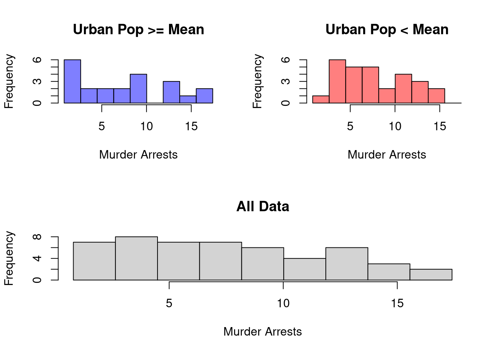
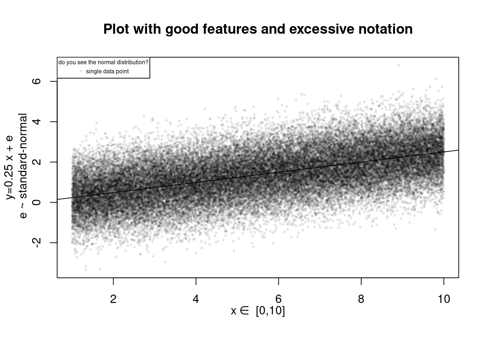
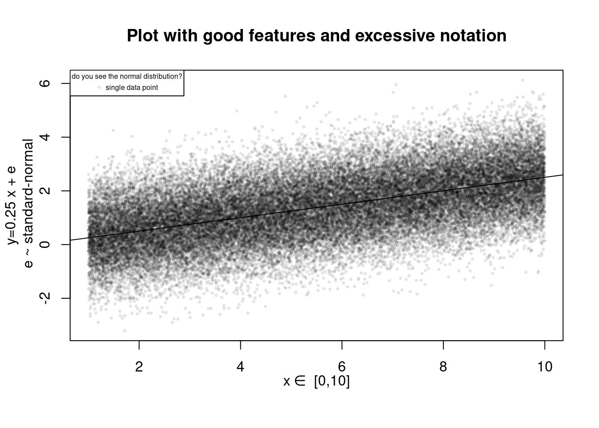
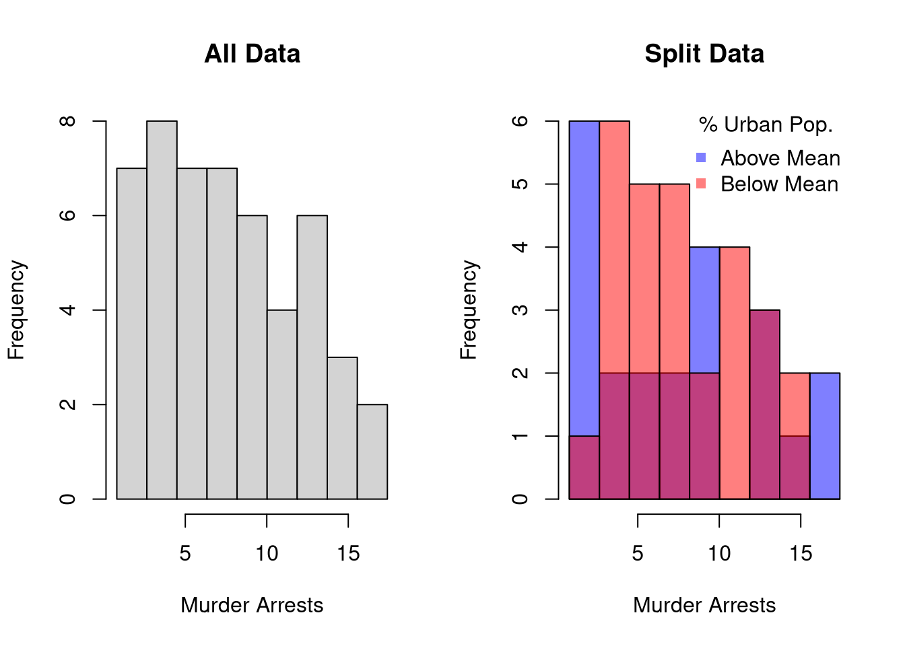

5 Data Analysis
5.1 Data
Commom Types
## [1] 1 2 3## [1] A B C
## Levels: A < B < C## [1] Leipzig Los Angeles Logan
## Levels: Leipzig Logan Los Angeles## [1] "hello world" "hi mom"## [[1]]
## [1] 1 2 3
##
## [[2]]
## [1] A B C
## Levels: A < B < C
##
## [[3]]
## [[3]][[1]]
## [1] Leipzig Los Angeles Logan
## Levels: Leipzig Logan Los Angeles
##
## [[3]][[2]]
## [[3]][[2]][[1]]
## [1] "...inception..."## data.frames: your most common data type
## matrix of different data-types
## well-ordered lists
l5 <- data.frame(x=l1, y=l2, z=l3)
l5## x y z
## 1 1 A Leipzig
## 2 2 B Los Angeles
## 3 3 C LoganReading in
## Load in from R packages
library(wooldridge)
data('crime2')
data('crime4')
## Read in csv from online
dat_csv <- read.csv('http://www.stern.nyu.edu/~wgreene/Text/Edition7/TableF19-3.csv')
dat_csv <- as.data.frame(dat_csv)
## Read in csv from online
dat_stata <- haven::read_dta('https://www.ssc.wisc.edu/~bhansen/econometrics/DS2004.dta')
dat_stata <- as.data.frame(dat_stata)
## For More Introductory Econometrics Data, see
# https://www.ssc.wisc.edu/~bhansen/econometrics/Econometrics%20Data.zip
# https://pages.stern.nyu.edu/~wgreene/Text/Edition7/tablelist8new.htm
# R packages: wooldridge, causaldata, Ecdat, AER, ....Read in some historical data on crime in the US
## Murder Assault UrbanPop Rape
## Alabama 13.2 236 58 21.2
## Alaska 10.0 263 48 44.5
## Arizona 8.1 294 80 31.0
## Arkansas 8.8 190 50 19.5
## California 9.0 276 91 40.6
## Colorado 7.9 204 78 38.7## Murder Assault UrbanPop Rape
## Min. : 0.800 Min. : 45.0 Min. :32.00 Min. : 7.30
## 1st Qu.: 4.075 1st Qu.:109.0 1st Qu.:54.50 1st Qu.:15.07
## Median : 7.250 Median :159.0 Median :66.00 Median :20.10
## Mean : 7.788 Mean :170.8 Mean :65.54 Mean :21.23
## 3rd Qu.:11.250 3rd Qu.:249.0 3rd Qu.:77.75 3rd Qu.:26.18
## Max. :17.400 Max. :337.0 Max. :91.00 Max. :46.005.2 Plots
5.2.1 Histograms
Histograms Summarize Distributions. Easy to show data splits
## Urban Population above/below mean
u <- mean(USArrests$UrbanPop)
m1 <- USArrests[USArrests$UrbanPop<u,'Murder']
m2 <- USArrests[USArrests$UrbanPop>=u,'Murder']
xbks <- seq(min(m1,m2), max(m1,m2), length.out=10)
hist(m1, col=rgb(0,0,1,.5), breaks=xbks, xlab='Murder Arrests', main='')
hist(m2, add=T, col=rgb(1,0,0,.5), breaks=xbks)
cols <- c(rgb(0,0,1,.5), rgb(1,0,0,.5))
legend('topright', col=cols, pch=15,
title='% Urban Pop.', legend=c('Above Mean', 'Below Mean'))
title('Arrests per 100,000 across 50 US states in 1973')
Glue together to convey more information all at once
par(mfrow=c(1,2))
## All Data
hist(USArrests$Murder, main='All Data', xlab='Murder Arrests')
## Split Data
xbks <- seq(min(m1,m2), max(m1,m2), length.out=10)
cols <- c(rgb(0,0,1,.5), rgb(1,0,0,.5))
hist(m1, col=cols[1], breaks=xbks, xlab='Murder Arrests', main='Split Data')
hist(m2, add=T, col=cols[2], breaks=xbks)
legend('topright', col=cols, pch=15, bty='n',
title='% Urban Pop.', legend=c('Above Mean', 'Below Mean'))
par(fig=c(0,1,0,0.5), new=F)
hist(USArrests$Murder, breaks=xbks, main='All Data', xlab='Murder Arrests')
par(fig=c(0,.5,0.5,1), new=TRUE)
hist(m1, breaks=xbks, col=rgb(0,0,1,.5),
main='Urban Pop >= Mean', xlab='Murder Arrests')
par(fig=c(0.5,1,0.5,1), new=TRUE)
hist(m2,breaks=xbks, col=rgb(1,0,0,.5),
main='Urban Pop < Mean', xlab='Murder Arrests')
For more histogram visuals, see https://r-graph-gallery.com/histogram.html
5.2.2 Boxplots
All Data

Split data into groups and glue together
## Two Groups: cut(USArrests$UrbanPop,2)
USArrests$UrbanPop_cut <- cut(USArrests$UrbanPop,4) ## 4 Groups
par(mfrow=c(1,2))
boxplot(USArrests$Murder, main='All Data', ylab='Murder Arrests')
boxplot(Murder~UrbanPop_cut, USArrests,
main='Split Data', col=hcl.colors(4,alpha=.5),
xlab='Urban Population', ylab='Murder Arrests')
5.2.3 Scatterplots

par(fig=c(0,0.8,0,0.8), new=F)
plot(Murder~UrbanPop, USArrests, pch=16, col=rgb(0,0,0,.5))
par(fig=c(0,0.8,0.55,1), new=TRUE)
boxplot(USArrests$Murder, horizontal=TRUE, axes=FALSE)
par(fig=c(0.65,1,0,0.8),new=TRUE)
boxplot(USArrests$UrbanPop, axes=FALSE)
Another example with a larger (simulated) dataset
## Data Generating Process
x <- seq(1, 10, by=.0002)
e <- rnorm(length(x), mean=0, sd=1)
y <- .25*x + e
xy_dat <- data.frame(x=x, y=y)
head(xy_dat)## x y
## 1 1.0000 0.8378812
## 2 1.0002 2.4866999
## 3 1.0004 0.6860374
## 4 1.0006 0.4933421
## 5 1.0008 -0.6896838
## 6 1.0010 1.0768924Plot the data and the line of best fit
## Data
plot(y~x, xy_dat, pch=16, col=rgb(0,0,0,.1), cex=.5)
## OLS Regression
reg <- lm(y~x, data=xy_dat)
## Add the line of best fit
abline(reg)
## Can Also Add Confidence Intervals
## https://rpubs.com/aaronsc32/regression-confidence-prediction-intervalsPolish the plot
## your first plot is pretty standard
## plot(y~x, xy_dat)
plot(y~x, xy_dat, pch=16, col=rgb(0,0,0,.1), cex=.5,
xlab='', ylab='') ## Format Axis Labels Seperately
mtext( 'y=0.25 x + e\n e ~ standard-normal', 2, line=2)
mtext( expression(x%in%~'[0,10]'), 1, line=2)
abline(reg)
title('Plot with good features and excessive notation')
legend('topleft', legend='single data point',
title='do you see the normal distribution?',
pch=16, col=rgb(0,0,0,.1), cex=.5)
Can export figure with specific dimensions
For plotting math, see https://astrostatistics.psu.edu/su07/R/html/grDevices/html/plotmath.html https://library.virginia.edu/data/articles/mathematical-annotation-in-r
For exporting options, see ?pdf.
For saving other types of files, see png("*.png"), tiff("*.tiff"), and jpeg("*.jpg")